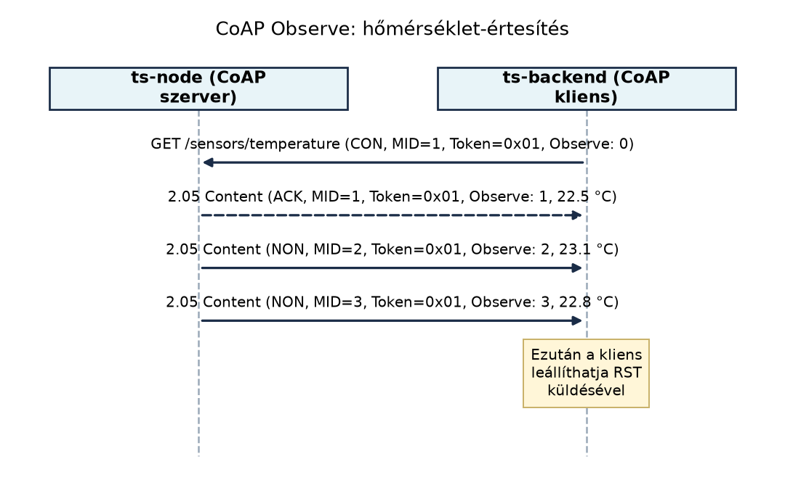

A TerraSense rendszerben a ts-node szenzorcsomópontok alapértelmezés szerint MQTT-t használnak, mert az üvegházban kiépített Wi-Fi-hálózaton egy központi broker gyűjti a telemetriát. Vannak azonban olyan telepítési helyek, ahol nincs megbízható TCP-alapú kapcsolat, vagy a csomópont erőforrásai annyira szűkösek, hogy a TCP-verem és az MQTT-kliens együttes memóriaigénye már nem fér be. Ilyenkor egy UDP fölött működő, kérés–válasz jellegű protokoll sokkal kisebb lábnyommal is képes együttműködni a háttérrendszerrel. Ugyanez a helyzet a firmware-frissítésnél: a ts-backendnek nagy adatblokkokat kell megbízhatóan átvinnie olyan eszközökre, amelyek nem tudnak TCP-alapú kapcsolatot fenntartani.
A CoAP (Constrained Application Protocol) ezt a rést tölti be: a HTTP-hez hasonló REST-modellt kínál, de kifejezetten korlátos eszközökre tervezve, UDP fölött, kis üzenetméretekkel és opcionális megbízhatósággal. A TerraSense-ben a ts-gw és a ts-backend közötti észak–déli forgalom MQTT marad, de a nagyon kis eszközök felé, vagy ahol a kérés–válasz minta fontosabb a folyamatos publikálásnál, a CoAP életképes alternatíva.
Definíció. A CoAP az RFC 7252 szabványban definiált, REST-alapú alkalmazásprotokoll korlátos erőforrású eszközök és hálózatok számára. UDP fölött üzemel, üzenetmodellje a CON (Confirmable), NON (Non-confirmable), ACK (Acknowledgement) és RST (Reset) típusokra épül. Minden üzenet egyedi Message ID-t (MID) és opcionális tokent hordoz, az utóbbi a kérés–válasz párosítást szolgálja.
A CoAP-erőforrások URI-kkal címezhetők, például
coap://ts-node.local/sensors/temperature. A fő metódusok
megegyeznek a HTTP-ével: GET, PUT, POST, DELETE. A válaszkódok is
hasonló felépítésűek, de tömörebbek: a 2.xx osztály a sikeres, a 4.xx a
klienshiba, az 5.xx a szerverhiba jele. A leggyakoribb kódok: 2.04
Changed, 2.05 Content, 4.04 Not Found, 4.13 Request Entity Too Large,
5.00 Internal Server Error.
A CoAP megbízhatósági modellje eltér a TCP-től. A CON üzenetet a fogadó ACK-kal nyugtázza, ugyanazzal a MID-del. Ha az ACK nem érkezik meg egy véletlenített kezdeti időn belül, a küldő exponenciálisan növekvő késleltetéssel újraküldi az üzenetet (alapértelmezés szerint 2 és 3 másodperc közötti kezdeti érték, majd duplázódás). A NON üzenetet nem nyugtázza a fogadó, így a kézbesítés nem garantált, viszont nincs retransmission, ezért például periodikus telemetria küldésére alkalmas. A kérés–válasz lehet piggybacked (a válasz az ACK-ban utazik) vagy separate (ha a szerver nem tud azonnal válaszolni, külön CON/NON üzenetben küldi el a választ).
Az Observe (RFC 7641) kiterjesztés a kérés–válasz modellt egészíti ki értesítés-alapú frissítéssel. A kliens a GET kérésben Observe opciót helyez el, ezzel jelzi, hogy az erőforrás értékének változásairól folyamatosan értesítést szeretne kapni. A szerver a kezdeti értéket elküldi, majd minden változáskor egy újabb üzenetet küld ugyanazzal a tokennel, így a kliens össze tudja kapcsolni a frissítéseket. A frissítések lehetnek CON vagy NON típusúak; ha NON, akkor elveszhetnek, de a következő frissítés a legfrissebb állapotot hordozza.
A Block (RFC 7959) kiterjesztés nagyobb adategységek átvitelét teszi lehetővé kisebb blokkokban. A kliens és a szerver a Block1 (kérés) és Block2 (válasz) opciókkal jelzi a blokk sorszámát (NUM), azt, hogy van-e több blokk (M flag), és a blokk méretét (SZX, 16 és 1024 bájt között, általában 16 vagy 64). Az átvitel során a fogadó fél minden blokkra 2.31 Continue választ ad, kivéve az utolsó blokk után, amikor a végső válaszkód érkezik.
Az alábbi ábra egy Observe regisztrációt és két frissítést mutat be a ts-node és a ts-backend között.

A diagramon látható, hogy a kezdeti GET CON üzenet, mert a regisztrációt megbízhatóan kell eljuttatni. A válasz piggybacked ACK, tehát ugyanabban az üzenetben utazik. A későbbi frissítések NON típusúak, így nincs nyugtázási overhead, de a kliensnek számolnia kell az esetleges elvesztéssel.
A CoAP és az MQTT közötti választás a TerraSense-ben az alábbi szempontokon múlik:
| Szempont | CoAP | MQTT |
|---|---|---|
| Kommunikációs minta | Kérés–válasz, REST | Publish/subscribe |
| Szállítás | UDP (DTLS biztonsággal) | TCP (TLS biztonsággal) |
| Központi komponens | Nem igényel brokert, peer-to-peer | Broker szükséges |
| Üzenetméret | Kicsi, bináris fejléc (4 B alap) | Kicsi, de TCP + MQTT fejléc |
| Megbízhatósági szintek | CON/NON, ACK, retransmission | QoS 0, 1, 2 |
| Üzenetmegőrzés | Nincs retained | Retained, Last Will |
| Több fogadó | Egyedi címzés, multicast lehetséges | Több feliratkozó topic-onként |
| Erőforrás-igény (eszköz) | Alacsonyabb (UDP, nincs TCP-verem) | Magasabb (TCP-verem, MQTT-kliens) |
| Energiaprofil | Rövid adás, nincs kézfogás TCP-szinten | TCP kézfogás, kapcsolattartás |
A TerraSense-ben a ts-node és a ts-gw közötti déli irány (rövid hatótáv, nagy megbízhatóság, eszközök sokasága) tipikusan BLE vagy LoRaWAN, ezért a CoAP itt nem közvetlenül jelenik meg. Azonban a ts-backend felé irányuló IP-alapú kapcsolatnál felmerülhet: ha egy eszköz közvetlenül UDP-t használ (például 6LoWPAN/Thread hálózaton), akkor a CoAP Observe hatékonyabb, mint egy MQTT-kliens TCP-kapcsolattal. Hasonlóan, a firmware-frissítésnél a CoAP blokkátvitel kifejezetten előnyös, mert a HTTP-hez vagy MQTT-hez képest kisebb overheaddel, szabványos módon, folytathatóan visz át nagy adatot.
A példában a ts-node egy 300 bájtos firmware-képet kap a ts-backendtől CoAP blokkátvitellel. A blokkméretet 64 bájtban állapítjuk meg, mert a szűkös pufferű eszköz így egyszerre csak kis darabot kell, hogy kezeljen. A 300 bájtos képet 5 blokkra osztjuk: négy darab 64 bájtos és egy darab 44 bájtos blokkra.
A kliens (ts-node) a PUT /fw erőforrásra küldi a
blokkokat. Minden CON üzenetben a Block1 opció jelzi az aktuális blokk
számát és az M flaget. Az első blokkban NUM=0, M=1 (van
több), az utolsóban NUM=4, M=0 (nincs több). A szerver
(ts-backend) minden köztes blokkra 2.31 Continue választ
ad, az utolsóra 2.04 Changed-et. Az üzenetváltást a fenti
blokkátviteli sequence diagram szemlélteti; itt a részleteket bontjuk
ki.
Az első kérés üzenetformátuma (Csak a releváns mezők):
CoAP Header: Ver=1, T=CON, Code=0.03 (PUT), MID=100
Token: 0xAA
Option Block1: NUM=0, M=1, SZX=64
Payload: a firmware első 64 bájtjaA szerver válasza ACK típusú, ugyanazzal a
MID=100-zal, a Token=0xAA-val,
2.31 Continue kóddal, és a Block1 opciót visszhangozza,
jelezve, hogy a 0. blokkot elfogadta. A kliens ezután
MID=101-gyel küldi az 1. blokkot, és így tovább. Az utolsó
blokk (NUM=4, M=0, 44 bájt) után a szerver
2.04 Changed-et ad, amivel a teljes kép átvitele sikeresen
befejeződik. Ha bármelyik ACK elveszik, a kliens a CON retransmission
szabályai szerint újraküldi az adott blokkot ugyanazzal a MID-del. Mivel
a szerver idempotensen kezeli a blokkokat (a Block1 NUM
alapján felismeri a duplikátumot), az újraküldés nem okoz
adatsérülést.
Továbbvitt eredmény. A példában bevezetett
blokkátviteli paramétereket (64 bájtos blokkméret, Block1 opció, 2.31
Continue kezelés) használja a LwM2M:
eszközmenedzsment objektummodellel alfejezet a firmware-frissítési
objektum tárgyalásakor, valamint az OTA-frissítés:
A/B képek, rollback, delta, fokozatos kiadás alfejezet a TerraSense
OTA-folyamatának tervezésekor. Az itt kialakított konvenció: a
firmware-kép erőforrása coap://ts-node/fw, a blokkméret 64
bájt, és a szerver minden köztes blokkra 2.31 Continue-val válaszol.
A CoAP működését Linux hoston a libcoap
coap-client és coap-server eszközeivel, vagy
Pythonban az aiocoap könyvtárral ellenőrizhetjük. A
laborban a ts-node-ot egy egyszerű CoAP-szerverrel szimulálhatjuk, a
ts-backendet pedig egy CoAP-klienssel. A hálózati forgalmat Wiresharkkal
foghatjuk el (udp.port == 5683 szűrő).
| Tünet | Ok | Javítás |
|---|---|---|
| A CON üzenetre nem érkezik ACK, a kliens folyamatosan újraküld | A szerver nem fut, vagy a port blokkolt | Indítsd el a szervert, ellenőrizd a tűzfalat
(netstat -uap) |
| A kliens nem kap Observe frissítéseket | A regisztráció elmaradt, vagy a token nem egyezik | Ellenőrizd, hogy a GET Observe opciót tartalmazott-e, és a token azonos-e |
| A blokkátvitel elakad a 2. blokk után | A szerver nem küld 2.31 Continue-t, vagy a kliens nem kezeli | Vizsgáld a Block1 opciót a válaszban; a szervernek vissza kell adnia a NUM-ot |
| Duplikált blokkok érkeznek a szerverre | A CON retransmission és a blokkátvitel együtt | A szerver idempotensen kezelje a Block1 NUM alapján, és ne írja felül az adatot |
A teszteléshez használjunk
coap-client -m get coap://127.0.0.1/sensors/temperature -s 5
parancsot, amely 5 másodpercig figyeli az Observe értesítéseket.
A CON üzenet garantálja a kézbesítést. A CON csupán azt jelenti, hogy a fogadó ACK-kal nyugtázza az üzenet vételét. Ez nem jelenti azt, hogy az alkalmazáslogika sikeresen feldolgozta a kérést. Gondoljunk a TCP-hez hasonlóan: az ACK a hálózati réteg nyugtája, nem az alkalmazásé. Ezért a kéréseket idempotensen kell megtervezni, különösen a PUT és DELETE műveleteknél.
A CoAP Observe helyettesíti az MQTT pub/sub-ot. Az Observe egyetlen kliens számára nyújt értesítést egyetlen erőforrásról. Nem támogat több feliratkozót, nincs broker, ami a topicok alapján továbbítana. Ha sok eszköznek kell egyszerre látnia ugyanazt az adatot, az Observe nem skálázódik: minden kliens külön regisztrál, és a szerver mindegyiknek külön küld frissítést. Ilyenkor az MQTT a megfelelő választás.
A blokkátvitelnél a szervernek minden blokkra 2.04 Changed-et kell válaszolnia. Valójában a köztes blokkokra 2.31 Continue a helyes válasz, jelezve a blokk elfogadását, de a teljes erőforrás még nem kész. Az utolsó blokkra érkezik a végső státuszkód (pl. 2.04 Changed).
Fogalmi kérdés: Magyarázd el, mi a különbség a CoAP piggybacked és separate válasza között, és adj példát arra, mikor van szükség separate válaszra a TerraSense-ben.
Számolási feladat: A ts-backend egy 1 500 bájtos konfigurációs fájlt küld CoAP blokkátvitellel, 128 bájtos blokkmérettel. Hány blokkra oszlik az átvitel? Mennyi a teljes hálózati overhead (csak a CoAP fejlécek, UDP és IP fejléc nélkül), ha minden blokk CON üzenet és a válaszok piggybacked ACK-ok? Tételezz fel 4 bájtos CoAP alapfejlécet, 1 bájtos token mezőt, 2 bájtos Block1 opciót, és a válaszokban szintén 4+1+1 bájtos fejlécet.
Implementációs feladat: Tervezd meg a TerraSense CoAP-erőforrásait a firmware-frissítéshez. Add meg az URI-struktúrát, a metódusokat, a szükséges opciókat, és írd le, hogyan kezelné a ts-node a blokkátvitel közbeni újraindulást (például hány blokk után menti el az állapotot). Ez a terv közvetlenül előkészíti a OTA-frissítés alfejezetet.
Hibakeresési feladat: Egy ts-node Observe
regisztrációt küld a /sensors/humidity erőforrásra, de a
ts-backend csak az első értéket kapja meg, utána nem érkezik frissítés,
pedig a páratartalom változik. Sorolj fel legalább három lehetséges
okot, és add meg mindegyikre a javítást.
Piggybacked válasz esetén a szerver a CON kérésre érkező ACK-ban azonnal elküldi a választ, mert a feldolgozás rövid. Separate válaszra akkor van szükség, ha a szerver nem tud azonnal válaszolni (például a ts-backendnek egy külső adatbázisból kell lekérnie az eszközárnyékot). Ekkor a szerver először egy üres ACK-ot küld, majd később egy külön CON/NON üzenetben a tényleges választ, ugyanazzal a tokennel.
A fájl 1 500 bájt, blokkméret 128 bájt. A blokkok száma (11 teljes blokk és egy 92 bájtos maradék). Minden kérés fejléce 4 + 1 + 2 = 7 bájt (feltételezve, hogy a Block1 opció kódja és hossza egy bájtban van, ami SZX=128-nál lehetséges). A válaszok fejléce 4 + 1 + 1 = 6 bájt (a válaszban a Block1 opció is lehet 2 bájt, de a példa egyszerűsítéseként 1 bájtos kóddal és hosszal számolunk). Összesen 12 kérés és 12 válasz: bájt. A tényleges overhead ennél több, mert az opciók hossza változhat, és a blokkok utolsó darabja rövidebb.
A firmware-frissítéshez a ts-node a
coap://ts-node/fw erőforrást használja PUT metódussal. A
kérés Block1 opciókat tartalmaz, a szerver 2.31 Continue-val nyugtázza a
köztes blokkokat és 2.04 Changed-del az utolsót. Az eszköz az
újraindulás elleni védelemhez az aktuális blokk sorszámát (NUM) és a már
megkapott adat hash-ét nem felejtő (NVS) memóriában tárolja. Ha
újraindul, a PUT kérést a tárolt NUM után következő blokkal folytatja,
és a szerver a korábbi blokkokat nem kéri újra. Ez a mechanizmus a OTA-frissítés alfejezetben kerül
kidolgozásra.
Lehetséges okok:
A CoAP egy korlátos eszközökre tervezett REST-protokoll UDP fölött.
Négy üzenettípust használ: CON, NON, ACK, RST. A CON üzeneteket ACK
nyugtázza, elvesztés esetén exponenciális visszalépéssel újraküldés
történik. A kérés–válasz párosítást a token biztosítja. Az Observe
kiterjesztéssel a kliens folyamatos értesítést kap egy erőforrás
változásáról, a Block kiterjesztéssel pedig nagy adatok vihetők át kis
blokkokban, visszajelzéssel. A CoAP és az MQTT közötti döntés a
kommunikációs mintától, a broker szükségességétől és az eszköz
erőforrásaitól függ. Továbbvitt eredmény: a TerraSense
firmware-frissítési konvenciója CoAP blokkátvitellel:
coap://ts-node/fw, PUT metódus, 64 bájtos blokkméret,
köztes válasz 2.31 Continue, utolsó 2.04 Changed. Ezt használja a LwM2M: eszközmenedzsment objektummodellel és az OTA-frissítés: A/B képek, rollback, delta, fokozatos
kiadás alfejezet. A tervezett erőforrás-séma és az idempotens
blokkkezelés kulcsfontosságú a megbízható frissítéshez.
https://www.rfc-editor.org/rfc/rfc7252 (stabil
szabvány).https://www.rfc-editor.org/rfc/rfc7641 (stabil
szabvány).https://www.rfc-editor.org/rfc/rfc7959 (stabil
szabvány).libcoap és aiocoap eszközök pontos verzióját
és CLI-kapcsolóit a felhasználó rendszerén ellenőrizni kell, mert azok
verziófüggőek lehetnek.